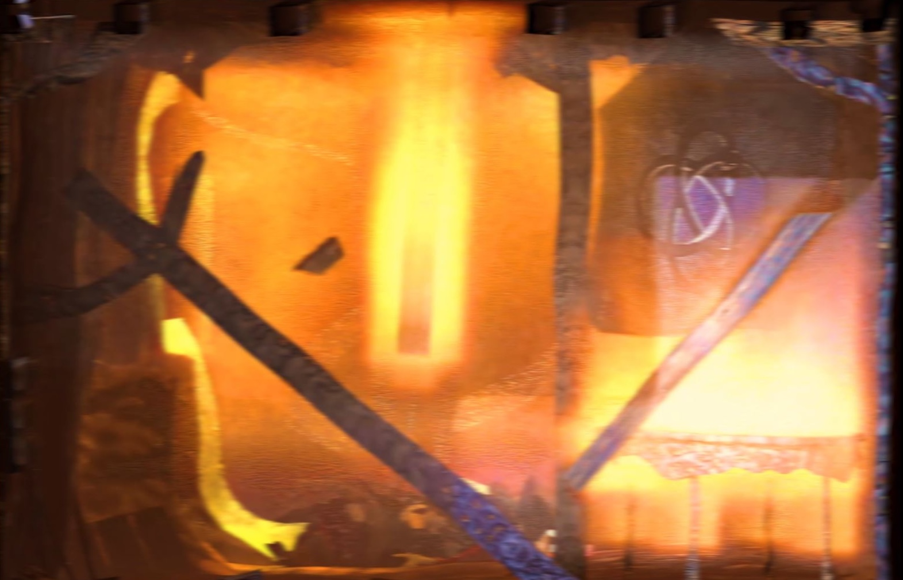
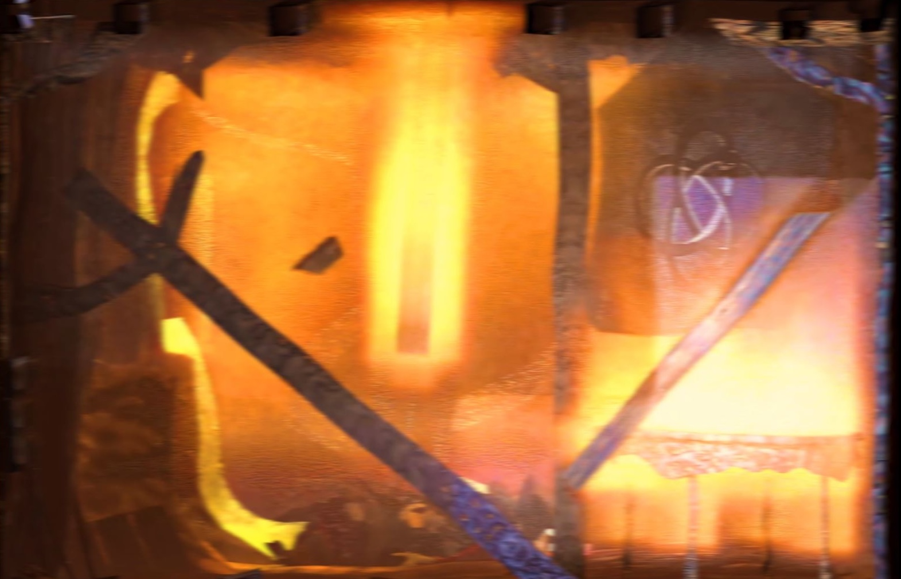

Shaped By You, is a duo show with artist Rafaela Figurski and consists of six video loops set in a virtual reconstruction of the h__s gallery in Antwerp, aswell as site specific happenings that took place within the gallery for one week.
The digital space presents the gallery’s architecture with a fairytale-like aesthetic.
Two fictional characters, “Babyface” and the “Jester,” inhabit the virtual gallery for one week.
Babyface is inspired by a 16th-century Huguenot.
Their interactions follow a pattern where Babyface’s mundane gestures are interrupted by the Jester’s mischief.
Each night, the characters’ actions, such as rearranging furniture and altering surfaces, are projected onto the gallery window’s closed curtain.
The six loops were created beforehand, and physical changes reflecting these events were collaboratively installed in the gallery each morning.
During the day, the gallery shows traces of the virtual events, such as charred wooden beams after a virtual fire.
The exhibition culminated in a staged real estate viewing, with an actor performing as an agent guiding visitors through the gallery building.
On the night before, the virtual characters were “kicked out” of their fairytale space and reappeared as ghostly versions in a new, contemporary version of the digital reconstruction.
Documentation:

 
